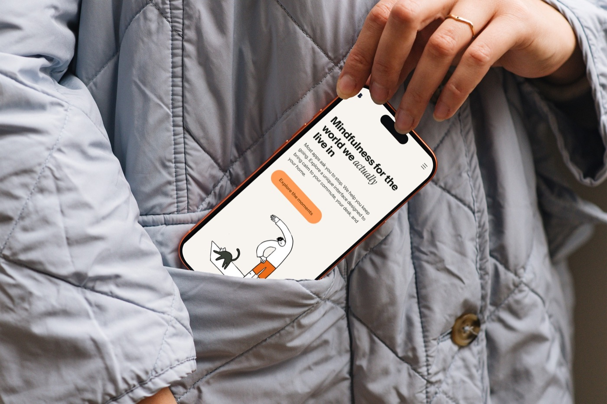
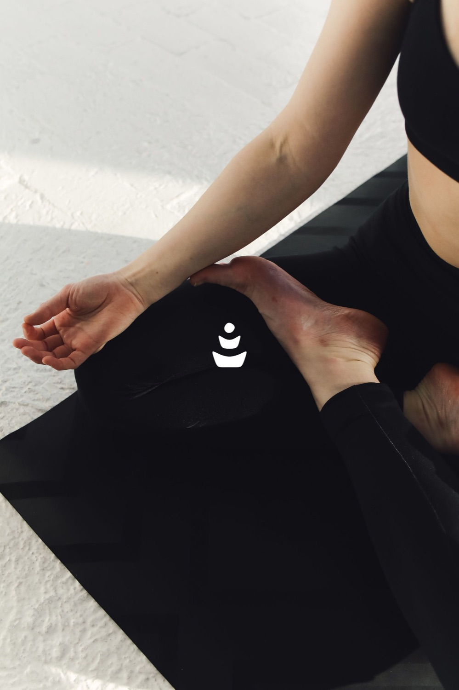
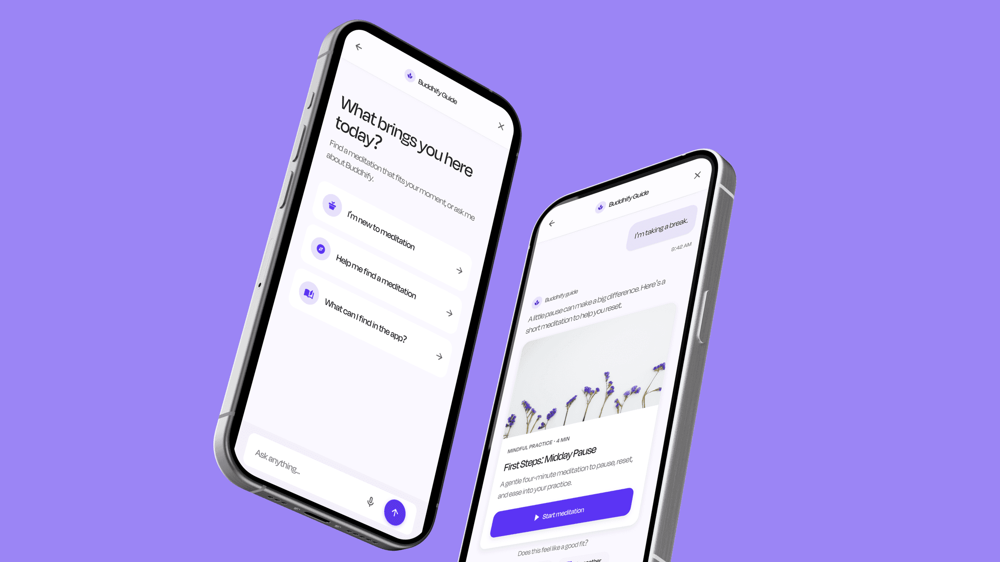

Junior UX/UI Designer
Sono Francesca, UX/UI designer in crescita. Progetto come le persone interagiscono con i prodotti digitali: osservo cosa funziona e mi chiedo cosa potrebbe funzionare meglio.
Osservo.
Mi chiedo.
Progetto.

Gli strumenti che uso
Figma & Framer
HTML5 · CSS3 · Sass · Bootstrap

MeditActive
Progettare significa anche capire perché.
Sono una Junior UX/UI Designer. L'intelligenza artificiale ha aggiunto nuove domande al mio lavoro, e mi piace porle prima di aprire qualsiasi file di design.
Il tema scuro si attiva da solo, in base alle impostazioni del tuo dispositivo.

Buddhify Guide
Hai una domanda? Parliamone.
Cerchi una Junior UX/UI Designer o vuoi collaborare a un progetto?
Chi sono
Tre verbi per descrivere come lavoro
Osservo
Parto da come le persone usano davvero un prodotto, non da come immagino lo usino.
Mi chiedo
Cosa potrebbe funzionare meglio? È la domanda con cui comincia ogni mio progetto.
Progetto
Trasformo le risposte in interfacce chiare, coerenti e curate fino al dettaglio.
Cosa so fare
Competenze e strumenti
Design
Strumenti di design
Front-end
Com'è fatto questo sito
Anche questo sito è un progetto
HTML e CSS scritti a mano, Sass per i token, Bootstrap come base, Flexbox e Grid per il layout. Questi sono i suoi mattoncini, tutti definiti in un unico file di variabili.
Colori
Accento#5b4bf0
Accento soft#eeebff
Corallo#ff8f6b
Corallo softmix 40%
Salvia#8fc9b0
Inchiostro#1d1b24
Tela#f3f1ee
Superficie#ffffff
Il tema scuro si attiva da solo, in base alle impostazioni del tuo dispositivo.
Tipografia
Inter Bold 40 / 650
Titoli di sezione 24 / 650
Testo corrente, leggibile e sobrio. 16 / 400
Instrument Serif accento
Spaziatura (base 4px)
4px
8px
16px
24px
40px
64px